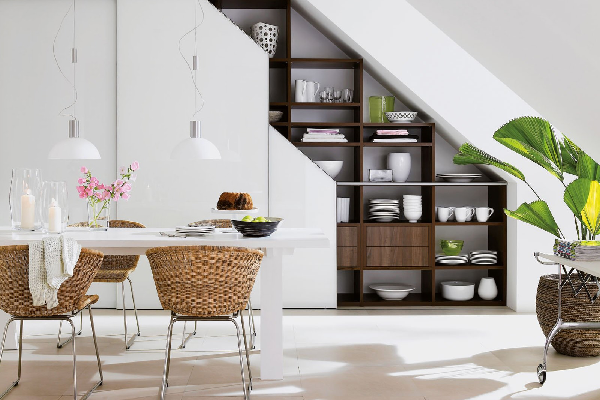
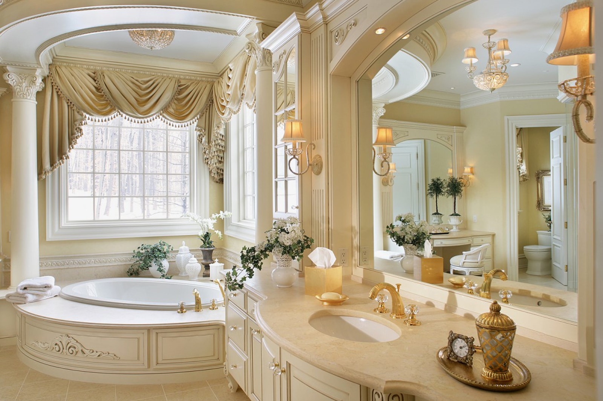
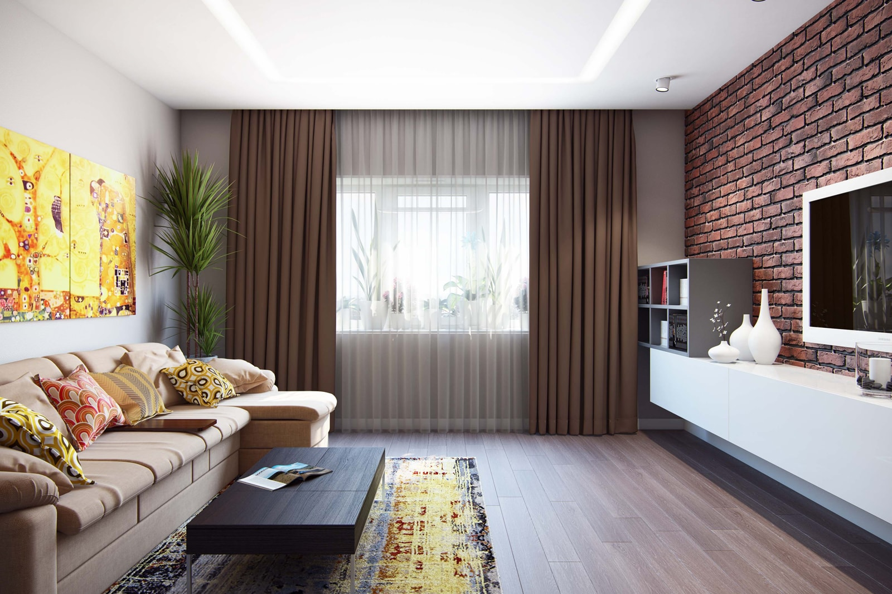
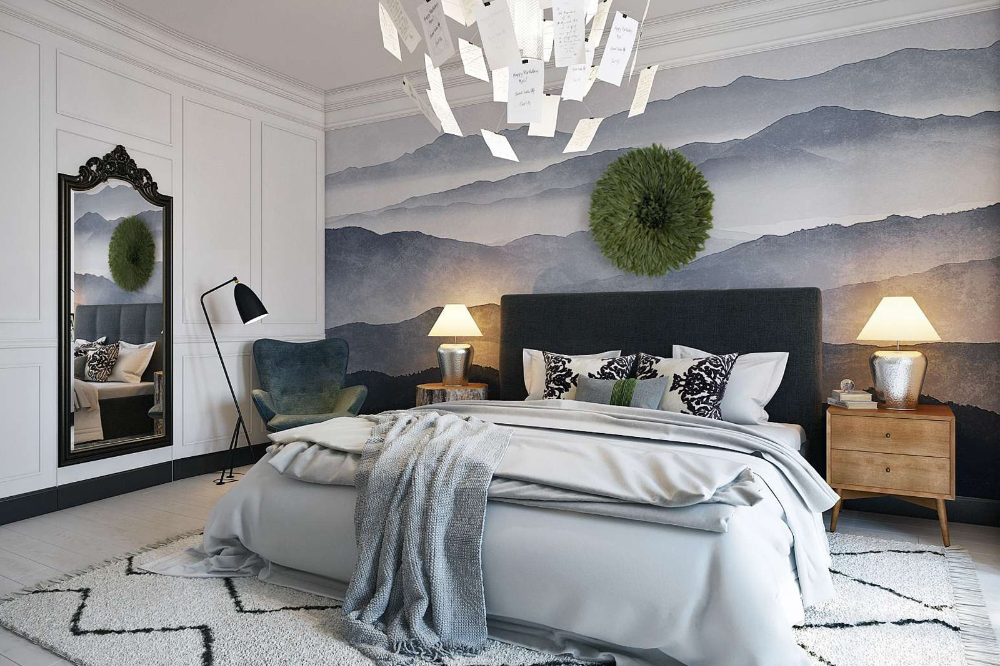
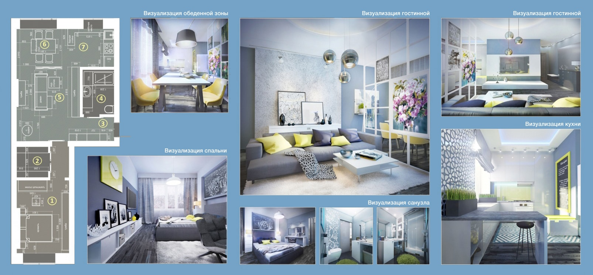

Desent
Виды и типы дизайн-проектов
Дизайн-проект интерьера квартиры — это пакет документов, который состоит из подробных планов, чертежей и эскизов будущего оформления подсобных и жилых помещений. Комплекты проектной документации различаются между собой видом услуг, объемом работ и ценой.
Базовый вариант
В понятие базового проекта интерьера входит:
Помимо этого составляются рекомендации по подбору мебели, сантехники для ванной и оборудования для кухни. Обязательной составляющей базового дизайн-проекта является консультация по выбору и приобретению отделочных и строительных материалов.
Эскизный дизайн-проект
Самым простым в разработке является эскизный проект интерьера. Кроме обязательного обмерного чертежа создается:
Декоративный дизайн-проект
   Этот вид проектирования может быть как отдельным видом, так и входить в разработку полного дизайн-проекта интерьера. Декорирование выполняется после окончания отделочных работ. Работа по созданию декоративного проекта включает в себя разработку и оформление внутреннего пространства всех помещений в квартире, а также создание подробных эскизов в цвете и подбор: настенной графики; светильников и люстр; столовых приборов, скатертей; аксессуаров, скульптур и прочих элементов декора; домашнего текстиля — штор, постельного белья, покрывал, ковров.
Полномасштабный вариант
Это наиболее развернутый вид дизайн-проекта, в который входит максимальное количество работ и услуг.
Полный дизайн-проект интерьера:
Один из важных пунктов разработки проекта — составление нескольких эскизов интерьера по каждому помещению. Обязательной частью является и консультативная работа по подбору предметов мебели и прочих элементов оформления. Каждая деталь интерьера изображается в трехмерном виде при помощи специальных программ.
Разработка дизайн-проекта и 3D моделирование позволяют:
Авторский надзор
По дополнительному согласованию возможно включение в список такого пункта, как авторский надзор. Этот вид услуг включает в себя: